In my finance folder there's a checklist text file for closing out the bakery equipment loan, plus the loan payment spreadsheet it refers to. Follow the checklist exactly: it names a reference page to look up on the web, the columns to add to the spreadsheet, and the summary deck to build. Do every numbered step and save the workbook and the presentation where the checklist says.
THINKINGThe user wants me to follow a checklist in their finance folder. I need to first find and read the checklist file and the spreadsheet it references. Let me start by opening the file manager to locate the finance folder. I'll take a screenshot first, but I already have the desktop. Let me open the Files application to navigate to the finance folder.
ACTIONI'll start by opening the file manager to locate the finance folder and its contents.
EXECUTED (pyautogui in VM)pyautogui.click(32, 605)
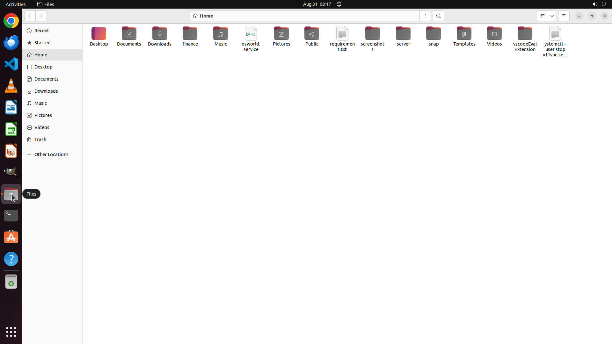
step 2 00:17:38
THINKINGThe Files manager is open showing the Home directory. I can see a "finance" folder. I need to open it to find the checklist text file and the spreadsheet. Let me double-click the finance folder.
ACTIONI can see the finance folder. Let me open it to find the checklist and spreadsheet.
EXECUTED (pyautogui in VM)pyautogui.doubleClick(593, 100)
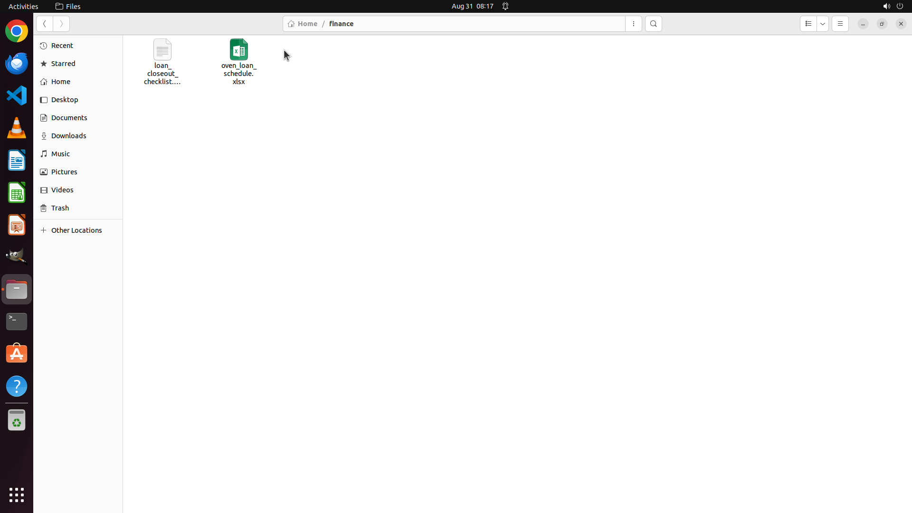
step 3 00:17:49
THINKINGThe finance folder contains two files: "loan_closeout_checklist..." (a text file) and "oven_loan_schedule.xlsx" (the spreadsheet). I need to read the checklist first. Rather than double-clicking (which may open in an editor that's hard to read via screenshots), I could use a terminal to cat the file. But the task says follow GUI. Reading a text file - let me just open it. Actually, using a terminal to read the checklist text would be reliable. However, the guidance says use GUI for the task app. Reading the checklist is just information gathering. Let me open the checklist with double-click to read it in a text editor.
Actually, to read the checklist reliably and completely, a terminal cat would be cleaner. But let me first open it with the GUI text editor to read it. Double-click the checklist.
ACTIONThe finance folder contains the checklist text file and the `oven_loan_schedule.xlsx` spreadsheet. Let me open the checklist to read its instructions.
EXECUTED (pyautogui in VM)pyautogui.doubleClick(342, 114)
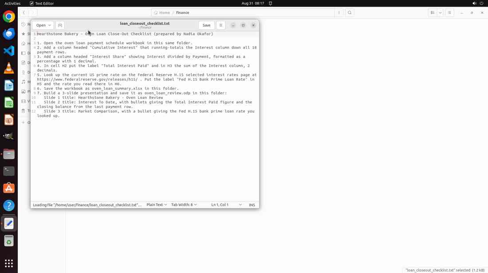
step 4 00:18:16
THINKINGLet me read the checklist carefully:
"Hearthstone Bakery - Oven Loan Close-Out Checklist (prepared by Nadia Okafor)
1. Open the oven loan payment schedule workbook in this same folder.
2. Add a column headed "Cumulative Interest" that running-totals the Interest column down all 18 payment rows.
3. Add a column headed "Interest Share" showing Interest divided by Payment, formatted as a percentage with 1 decimal.
4. In cell H2 put the label "Total Interest Paid" and in H3 the sum of the Interest column, 2 decimals.
5. Look up the current US prime rate on the Federal Reserve H.15 selected interest rates page at https://www.federalreserve.gov/releases/h15/ . Put the label "Fed H.15 Bank Prime Loan Rate" in H5 and the rate you read there in H6.
6. Save the workbook as oven_loan_summary.xlsx in this folder.
7. Build a 3-slide presentation and save it as oven_loan_review.odp in this folder:
Slide 1 title: Hearthstone Bakery - Oven Loan Review
Slide 2 title: Interest To Date, with bullets giving the Total Interest Paid figure and the closing balance from the last payment row.
Slide 3 title: Market Comparison, with a bullet giving the Fed H.15 bank prime loan rate you looked up."
Now I understand the full task. Key data points needed:
- The spreadsheet has 18 payment rows with columns including Interest and Payment.
- Step 5 requires looking up the Fed H.15 bank prime loan rate from the web. This will change over time and I need the actual value. I need to visit the URL.
Let me plan my approach:
1. Open the spreadsheet to understand its structure (columns, headers, where Interest and Payment are).
2. Add Cumulative Interest column (running total of Interest across 18 rows).
3. Add Interest Share column (Interest/Payment, percentage 1 decimal).
4. H2 = "Total Interest Paid", H3 = sum of Interest column (2 decimals).
5. Look up Fed H.15 prime rate online.
6. H5 = "Fed H.15 Bank Prime Loan Rate", H6 = the rate.
7. Save as oven_loan_summary.xlsx.
8. Build 3-slide odp presentation and save as oven_loan_review.odp.
I need the Fed rate from the web first ideally, but I can do it in the middle. Let me first open the spreadsheet to understand the structure. Let me open it. I'll double-click the xlsx file. First let me go back to the file manager. Actually the text editor is open on top. Let me open the spreadsheet from the file manager behind. I can switch to Files window. Let me open the spreadsheet by clicking Files in the top bar or the file manager.
Let me first look up the Fed rate via the browser, since that's an independent external lookup. Actually, let me open the spreadsheet first to understand structure, which is the foundation. Let me minimize/close text editor and open the xlsx.
Let me open the spreadsheet. I'll click on the Files window in the taskbar/top. Actually the file manager is behind. Let me just double-click won't work since editor covers. Let me close the text editor to get back to files, or use the Files app. I'll click on Files icon in dock to bring file manager forward, then double-click xlsx.
ACTIONI've read the full checklist. The steps are:
1. Open the workbook (oven_loan_schedule.xlsx)
2. Add a "Cumulative Interest" column (running total of Interest, 18 rows)
3. Add an "Interest Share" column (Interest ÷ Payment, percentage, 1 decimal)
4. H2 = "Total Interest Paid", H3 = sum of Interest column (2 decimals)
5. Look up the Fed H.15 Bank Prime Loan Rate online; H5 = label, H6 = the rate
6. Save as oven_loan_summary.xlsx
7. Build a 3-slide presentation saved as oven_loan_review.odp
Let me start by looking up the Fed H.15 rate, since that's the external data I'll need. I'll open Chrome.
EXECUTED (pyautogui in VM)pyautogui.typewrite("https://www.federalreserve.gov/releases/h15/")
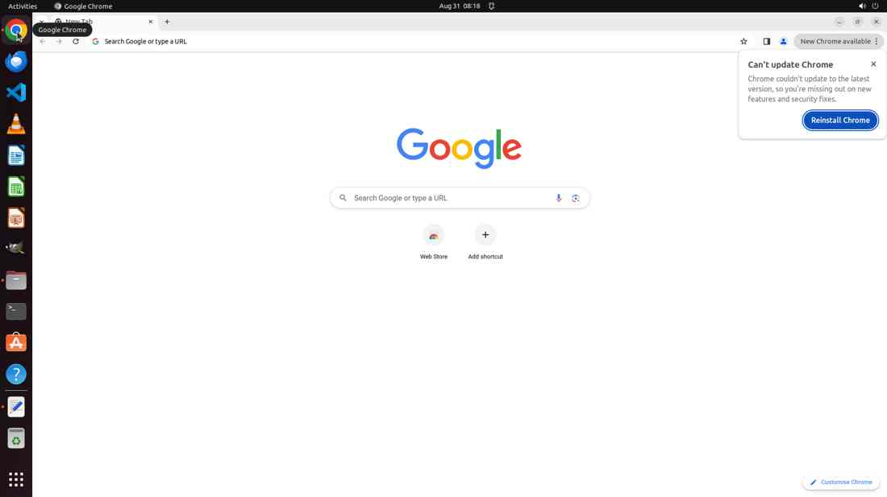
step 6 00:18:41
THINKINGThe URL text doesn't appear in the address bar - it seems my typed text wasn't registered in the address bar (the bar still shows "Search Google or type a URL"). Also there's a "Can't update Chrome" popup. The address bar may not have been focused when I typed. Let me click the address bar first, then type the URL and press Enter. Let me dismiss the update popup by clicking the X, then click the address bar.
ACTIONThe URL didn't register in the address bar. Let me click the address bar and enter the URL, and dismiss the update popup.
EXECUTED (pyautogui in VM)pyautogui.click(1889, 138)
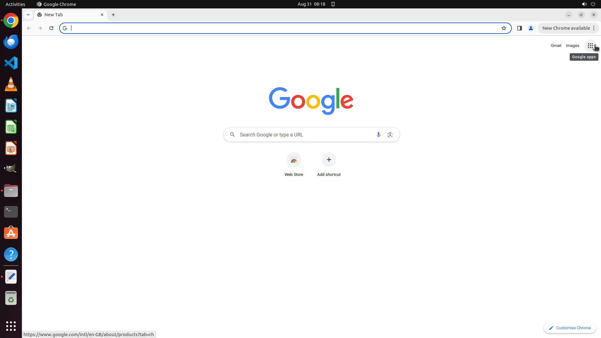
step 7 00:18:52
THINKINGThe popup is dismissed and the address bar now appears focused (cursor visible). Let me click the address bar to be sure, type the URL, and press Enter.
ACTIONThe address bar is now focused. Let me type the URL and navigate.
EXECUTED (pyautogui in VM)pyautogui.typewrite("https://www.federalreserve.gov/releases/h15/")
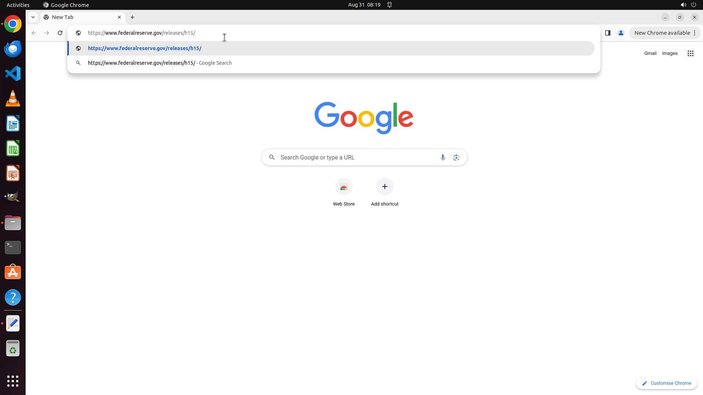
step 9 00:19:18
THINKINGThe URL is in the address bar with a dropdown suggestion showing the exact URL highlighted. The Enter key in the type action may not have navigated. Let me press Enter to navigate to the page.
ACTIONThe URL is entered. Let me press Enter to navigate to the page.
EXECUTED (pyautogui in VM)pyautogui.press("return")
step 10.1 00:19:45
THINKINGThe H.15 page loaded. Release date: August 28, 2026. There's a table with "Selected Interest Rates". I need the "Bank prime loan" rate. The table shows columns for dates 2026 Aug 21, 24, 25, 26, 27. I need to scroll down to find the "Bank prime loan" row. The current data shown is Federal funds, Commercial Paper. Let me scroll down to find the Bank prime loan row. The latest date is Aug 27 (rightmost column) - but release date is Aug 28. The rightmost is the most recent. Let me scroll down to find the Bank prime loan row.
ACTIONThe H.15 page loaded (release date August 28, 2026). I need to scroll down to find the "Bank prime loan" row in the table.
EXECUTED (pyautogui in VM)pyautogui.moveTo(987, 600)
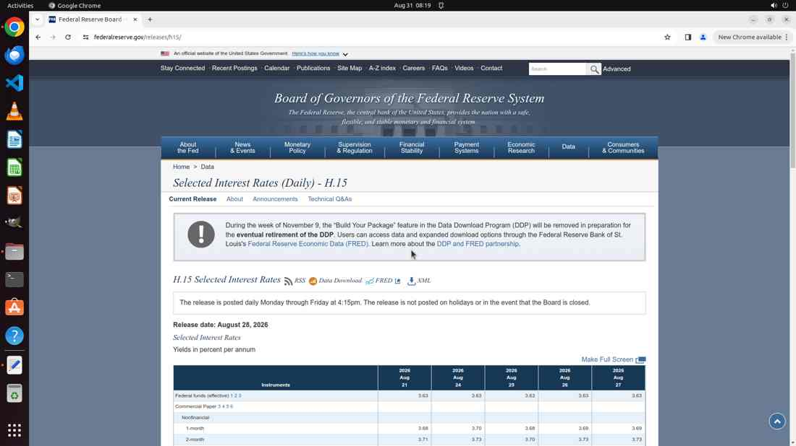
step 10.2 00:19:49
same model call as the previous action
EXECUTED (pyautogui in VM)pyautogui.scroll(-3)
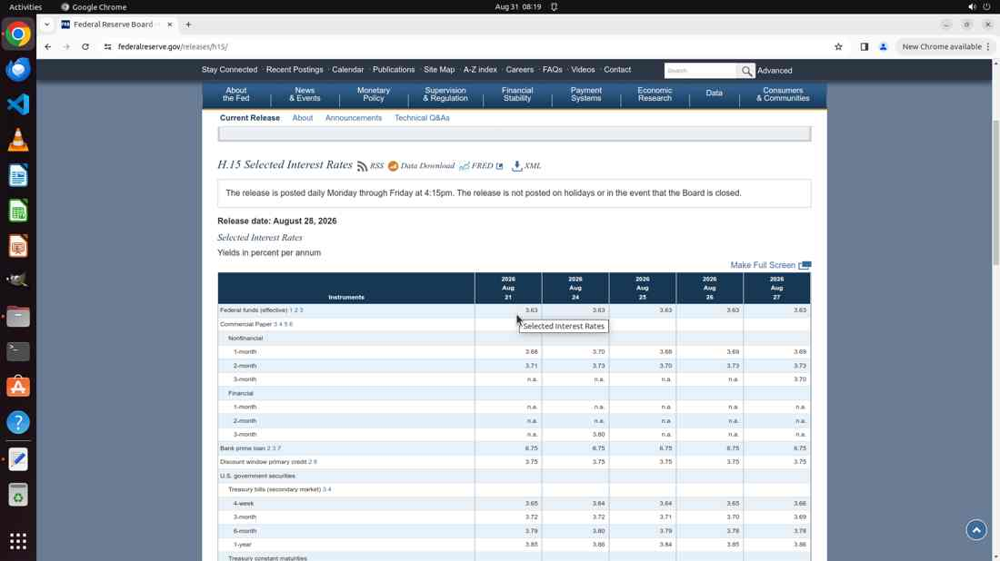
step 11 00:20:02
THINKINGI can now see the "Bank prime loan" row. It shows 6.75 across all five columns (Aug 21, 24, 25, 26, 27). The most recent value is 6.75. So the Fed H.15 Bank Prime Loan Rate is 6.75.
So H6 = 6.75. The label in H5 = "Fed H.15 Bank Prime Loan Rate".
Now I have the key external data. Let me proceed to the spreadsheet work. Let me note:
- Fed H.15 Bank Prime Loan Rate = 6.75
Now I'll open the spreadsheet. Let me switch to the file manager. I'll click the Files icon in the dock, then open oven_loan_schedule.xlsx. Actually the spreadsheet is what I need to edit. Let me open it via the file manager.
Let me click the Files dock icon.
ACTIONI found the "Bank prime loan" row — it shows **6.75** for the most recent date (Aug 27, 2026). That's the rate to record.
Now let me open the spreadsheet to begin the workbook edits. I'll switch to the Files manager.
EXECUTED (pyautogui in VM)pyautogui.click(32, 605)
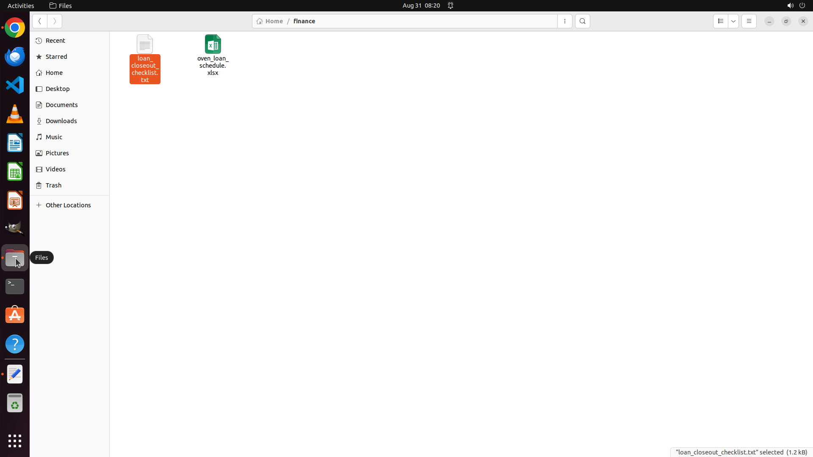
step 12 00:20:13
THINKINGThe file manager is showing the finance folder with the two files. Let me open the oven_loan_schedule.xlsx by double-clicking it. It should open in LibreOffice Calc.
ACTIONNow let me open the spreadsheet by double-clicking it.
THINKINGLibreOffice Calc opened. Let me analyze the structure:
- Column A: Payment Date (rows 2-19 = 18 payments)
- Column B: Payment (1420.55 each)
- Column C: Interest
- Column D: Principal
- Column E: Balance
- Columns F, G, H... are empty.
Rows 2-19 = 18 payment rows. Good.
Now the checklist:
- Step 2: Add "Cumulative Interest" column — running total of Interest (col C) across 18 rows. Where to place it? The checklist doesn't specify a column for it, but step 4 says H2 = "Total Interest Paid", H3 = sum. Step 5: H5/H6. So column H is reserved for the summary. So the two new columns should go in F and G (Cumulative Interest and Interest Share). That's the natural placement — add after the existing data in columns F and G.
Let me place:
- F1: "Cumulative Interest", F2:F19 = running total of C
- G1: "Interest Share", G2:G19 = C/B formatted as percentage 1 decimal
Formulas:
- F2 = C2 (first cumulative), F3 = F2+C3, ... So F2 = SUM($C$2:C2) is cleaner and robust. I'll use F2 = SUM($C$2:C2), then fill down to F19.
- G2 = C2/B2, format percentage with 1 decimal. Fill down to G19.
- H2 = "Total Interest Paid", H3 = SUM(C2:C19) formatted 2 decimals.
- H5 = "Fed H.15 Bank Prime Loan Rate", H6 = 6.75.
Then save as oven_loan_summary.xlsx (Keep Current Format).
Let me first close the notification bars (the "Help us make LibreOffice even better!" and donation). I can click the X buttons. There's also a top popup "Keep your files safe" - let me ignore/dismiss. Let me close the two info bars first by clicking their X at 1231.
Let me start entering data. First, let me click on cell F1. Actually, I'll use the Name Box to navigate to cells precisely. Let me use the Name Box (top-left showing A1).
Let me first close the two notification bars to get a cleaner view. Click X at 1231,150 and 1231,177.
Let me batch: click F1 via name box, type header, etc. But I need to be careful. Let me plan the entry sequence using the Name Box for navigation which is reliable.
Approach: Use the Name Box to go to a cell, then type.
Let me do F1 first:
- Click name box, type F1, Enter -> type "Cumulative Interest" Enter (moves to F2)
- Then F2: type =SUM($C$2:C2) Enter -> F3
- But fill down is easier via selecting F2 then filling. Actually I'll type each formula. That's 18 formulas. Instead, I can type F2 formula, then select F2 and copy, then select F3:F19 and paste. That's efficient.
Let me do it more efficiently:
1. F1 = "Cumulative Interest"
2. F2 = =SUM($C$2:C2)
3. Select F2, copy (Ctrl+C)
4. Select F3:F19, paste (Ctrl+V)
5. G1 = "Interest Share"
6. G2 = =C2/B2
7. Select G2, copy
8. Select G3:G19, paste
9. Format G2:G19 as percentage 1 decimal
10. H2 = "Total Interest Paid"
11. H3 = =SUM(C2:C19) format 2 decimals
12. H5 = "Fed H.15 Bank Prime Loan Rate"
13. H6 = 6.75
Let me start. First close the info bars. Let me click the X on both info bars.
ACTIONThe spreadsheet is open. The structure is:
- A: Payment Date, B: Payment, C: Interest, D: Principal, E: Balance
- 18 payment rows (2–19), and columns F, G, H are free
I'll place "Cumulative Interest" in F and "Interest Share" in G, leaving H for the summary labels. Let me first dismiss the notification bars.
EXECUTED (pyautogui in VM)pyautogui.click(1845, 223)
step 16 00:21:14
THINKINGBoth info bars are closed. Now I have a clean view. Let me confirm the data:
- Column A: Payment Date
- Column B: Payment (1420.55)
- Column C: Interest
- Column D: Principal
- Column E: Balance
- Rows 2-19 = 18 rows
Now let me enter the data. I'll use the Name Box to navigate.
Step 1: F1 header "Cumulative Interest", F2 formula =SUM($C$2:C2).
Let me click the Name Box, type F1, Enter, then type the header.
Let me batch the entry:
1. Click name box (95,123), type "F1", Enter
2. type "Cumulative Interest" Enter (goes to F2)
3. type "=SUM($C$2:C2)" Enter (goes to F3)
Actually after typing F1 in name box and Enter, cursor is at F1. Typing "Cumulative Interest" then Enter moves to F2. Then typing formula moves to F3. Good.
Let me do this in one batch.
ACTIONBoth notification bars are closed. Now let me enter the "Cumulative Interest" header and first formula. I'll navigate using the Name Box.
EXECUTED (pyautogui in VM)pyautogui.click(142, 183)
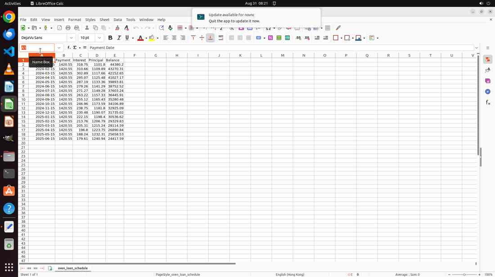
step 17 00:21:30
THINKINGThe Name Box is selected (highlighted "A1"). There's an "Update available for novnc" popup but I'll ignore it. Now let me type F1, Enter, then the header, then the formula. I'll batch:
- type "F1", Enter
- type "Cumulative Interest", Enter
- type "=SUM($C$2:C2)", Enter
This will place header in F1, formula in F2, and leave cursor at F3.
ACTIONThe Name Box is active. Let me navigate to F1 and enter the header and first cumulative formula.
TOOL CALL<tool_call>
<function=computer_use>
<parameter=action>
type
</parameter>
<parameter=text>
F1
</parameter>
</function>
</tool_call>
EXECUTED (pyautogui in VM)pyautogui.typewrite("F1")
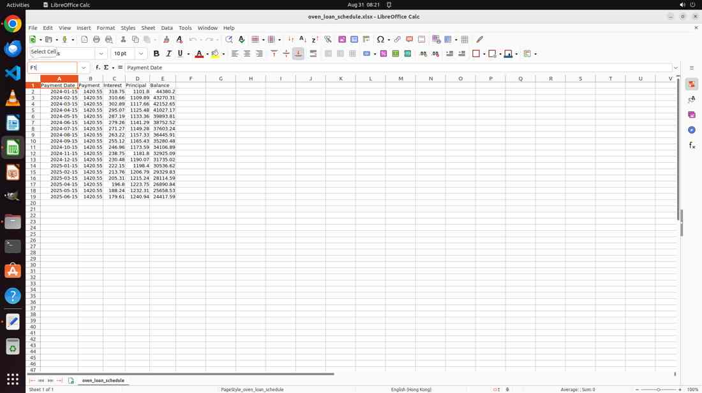
step 18 00:21:39
THINKINGThe name box shows "F1" and it seems the Enter didn't navigate yet - it shows "F1|" with cursor still in name box. The formula bar still shows "Payment Date" (A1's content). It seems the Enter in the type action just added a newline but the name box still shows "F1" with the cell not yet navigated. Actually the name box shows "F1" text. Let me press Enter to confirm navigation.
ACTIONThe Name Box shows "F1". Let me press Enter to navigate there, then type the header and first formula.
EXECUTED (pyautogui in VM)pyautogui.press("return")
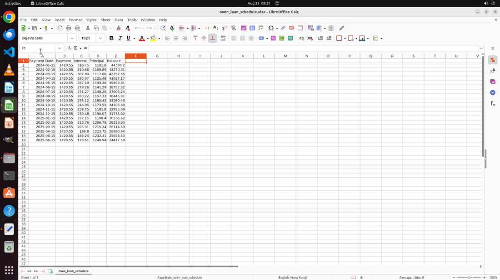
step 19 00:21:52
THINKINGNow F1 is selected (Name box shows F1, and the F column header is highlighted, cell F1 is the active cell). Now I'll type the header and formula. Typing "Cumulative Interest" then Enter moves to F2. Then type the formula then Enter moves to F3.
Let me batch these.
ACTIONF1 is now the active cell. Let me type the header and the first cumulative interest formula.
EXECUTED (pyautogui in VM)pyautogui.typewrite("Cumulative Interest\n=SUM($C$2:C2)")
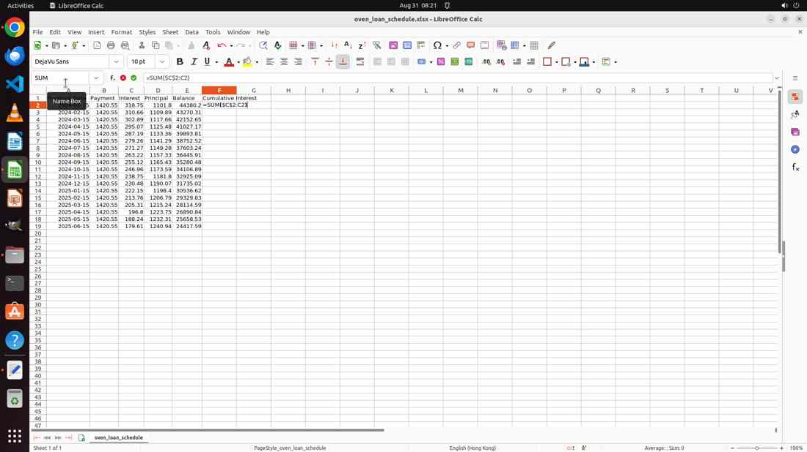
step 20 00:22:09
THINKINGI see something odd. F1 now shows "Cumulative Interest" (good). But F2 shows "=SUM($C$2:C2)" as literal text, and the formula bar shows "=SUM($C$2:C2)" with the name box showing "SUM". This suggests the cell is currently in edit mode showing the formula text, OR the formula was typed but the name box shows "SUM" meaning the cursor is still editing.
Wait, looking carefully: F1 = "Cumulative Interest" ✓. F2 shows "=SUM($C$2:C2)". The formula bar shows "=SUM($C$2:C2)" and name box shows "SUM". This is odd - it seems the trailing newline in my type created a situation where the second line "=SUM($C$2:C2)\n" — the first \n committed the header, moving to F2. Then "=SUM($C$2:C2)" typed into F2, then the final \n should commit it. But the formula bar still shows the formula and name box shows "SUM".
Hmm, actually the display in F2 shows the formula as text "=SUM($C$2:C2)" which would be wrong if it were a real formula (it would show a number). This means it was entered as text, not a formula! That happens if autocorrect or the cell is text-formatted, OR... Actually wait. Let me look: the name box shows "SUM" which is unusual. This looks like the cell reference dropdown.
Actually I think what happened: the formula IS being entered but the screenshot was taken mid-edit. The red X and green check in the formula bar area (188, 217 and 216,123) indicate edit mode is active. The name box shows "SUM" — no. Let me just press Enter to commit and take a screenshot to verify.
Actually the safest: press Enter to commit the current formula, then check F2 value.
ACTIONIt looks like the formula in F2 may still be in edit mode. Let me press Enter to commit it and check the result.
EXECUTED (pyautogui in VM)pyautogui.press("return")
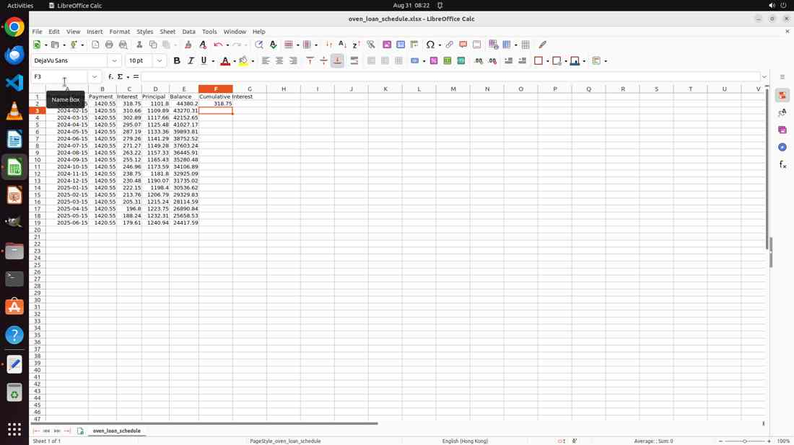
step 21 00:22:28
THINKINGNow F2 shows 318.75 which equals C2 (the first interest value). The formula worked as a real formula (SUM($C$2:C2) = C2 = 318.75). Now the cursor is at F3.
Now I need to fill F3:F19 with the running total formula. The best approach: select F2, copy, then select F3:F19, paste. Let me do that.
1. Click F2 (name box F2, or click cell F2 at ~346,167).
2. Ctrl+C
3. Select F3:F19 - I can use name box: type "F3:F19", Enter. But paste via Ctrl+V works on the selection.
4. Ctrl+V
Actually, there's a risk: when I typed the formula earlier, the trailing newline caused an extra Enter. Let me be careful with the type action this time — avoid trailing newlines that cause issues.
Let me do the copy/paste approach:
- Navigate to F2: click name box, type F2, Enter
- Ctrl+C
- Navigate to F3:F19: click name box, type F3:F19, Enter
- Ctrl+V
Let me batch these.
ACTIONF2 shows 318.75 (= C2), confirming the formula works. Now I'll copy F2 and paste it down to F3:F19 to build the running total. Let me use the Name Box for precise selection.
EXECUTED (pyautogui in VM)pyautogui.click(142, 183)
step 22 00:22:37
THINKINGThe name box is selected showing "F3". Let me type F2 and Enter to select F2, then copy, then select F3:F19 and paste. I'll batch:
- type "F2", Enter (but need to handle name box; from experience, after typing in name box the Enter may need a separate key. Earlier "F1\n" left it pending. Let me type "F2" then key Return separately to be safe.)
Actually earlier when I typed "F1\n" the newline didn't commit; I had to press Return separately. So the type action's embedded newline isn't committing in the name box. Let me type "F2" then press Return as a separate key action.
Let me batch: type "F2", key Return, key ctrl+c. Then I'll do the selection separately.
EXECUTED (pyautogui in VM)pyautogui.press("return")
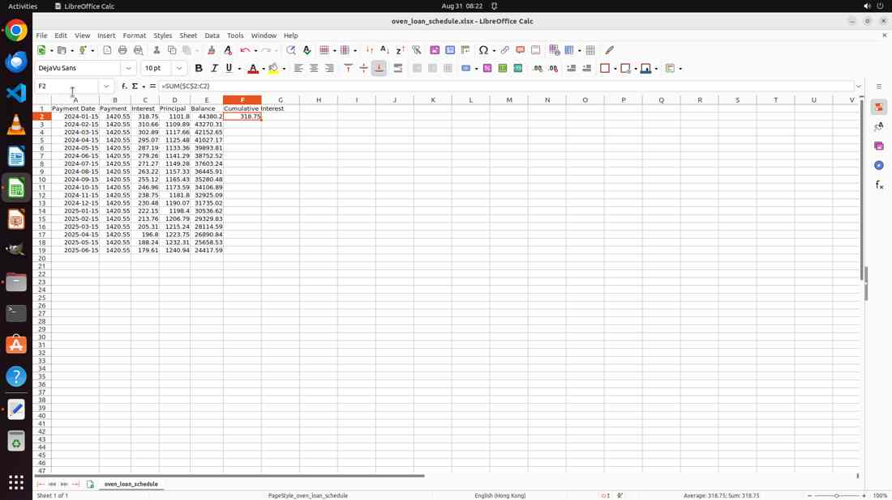
step 24 00:23:03
THINKINGF2 is selected, formula bar shows =SUM($C$2:C2), value 318.75. Now copy it, then select F3:F19 and paste. Let me batch:
- Ctrl+C
- click name box, type "F3:F19", Return
- Ctrl+V
I'll do copy + name box selection. The name box click at 95,123. Let me batch these steps carefully. Actually I'll copy first, then handle selection.
ACTIONF2 is selected with the correct formula. Let me copy it, then select the range F3:F19 and paste.
EXECUTED (pyautogui in VM)pyautogui.press("return")
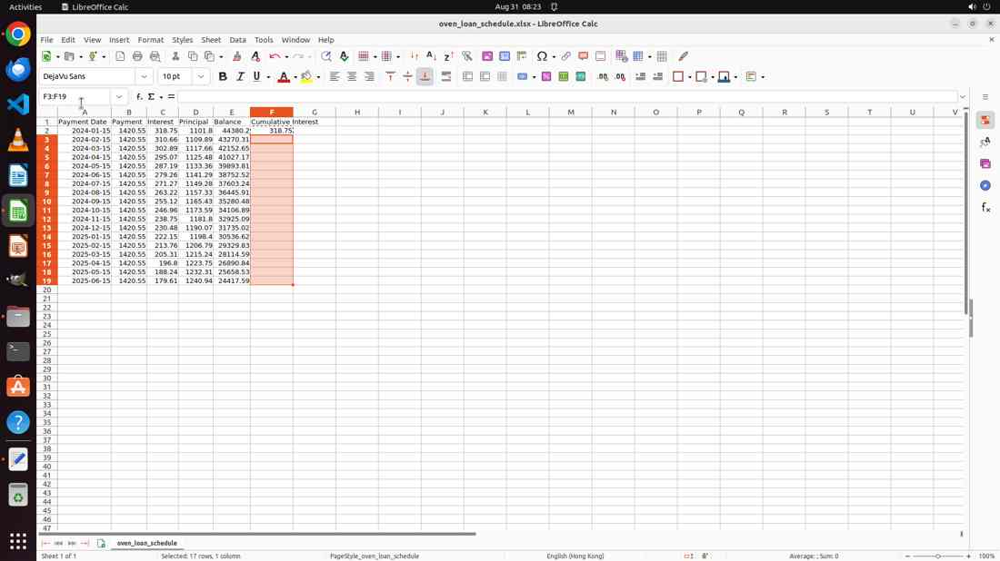
step 28 00:23:49
THINKINGF3:F19 is selected (17 rows, 1 column shown in status bar). Now paste with Ctrl+V. This will paste the formula adjusted relatively, so F3=SUM($C$2:C3), ..., F19=SUM($C$2:C19). Perfect running total.
ACTIONThe range F3:F19 is selected. Now let me paste the formula.
EXECUTED (pyautogui in VM)pyautogui.hotkey("ctrl", "v")
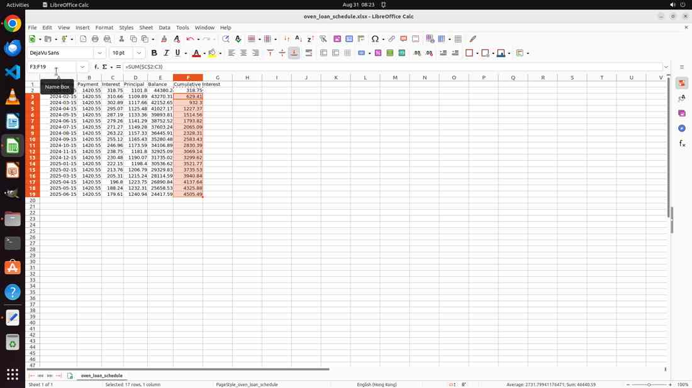
step 29 00:24:12
THINKINGThe Cumulative Interest column F is now filled with running totals. F3 formula = SUM($C$2:C3) = 629.41. Values increasing: 318.75, 629.41, 932.3, 1227.37... up to F19 = 4505.49. This is the running total of Interest.
Now I need to create the "Interest Share" column in G:
- G1 = "Interest Share"
- G2 = C2/B2 formatted as percentage 1 decimal
- Fill down G3:G19
Let me navigate to G1. Click name box, type G1, Return. Then type header and formula. Then copy G2 down to G3:G19, then format as percentage.
Let me be careful with the trailing newline issue. When I type into cells (not name box), the newline commits and moves down. Earlier for F1 header + formula, the type with newlines worked (F1 got header, F2 got formula). Wait, but there was a strange "SUM" name box issue. Let me just do it step by step carefully.
Let me navigate to G1 first.
ACTIONThe Cumulative Interest column is filled correctly (F19 = 4505.49, the running total). Now let me create the "Interest Share" column in G. First I'll navigate to G1.
EXECUTED (pyautogui in VM)pyautogui.typewrite("G1")
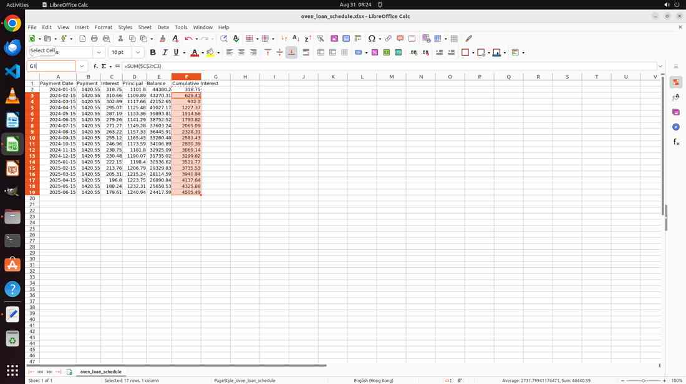
step 31 00:24:35
THINKINGName box shows "G1". Press Return to navigate, then type header and formula. I'll type "Interest Share" Enter, then "=C2/B2" Enter. Let me do Return first, then the type.
EXECUTED (pyautogui in VM)pyautogui.press("return")
step 32 00:24:44
THINKINGG1 is now the active cell (name box G1, formula bar empty). Now type the header and formula. I'll type "Interest Share" then Enter (moves to G2), then "=C2/B2" then Enter (moves to G3). Let me batch these in one type action. The newline behavior in cells commits and moves down, which is what I want here.
ACTIONG1 is active. Let me type the header and the first Interest Share formula.
EXECUTED (pyautogui in VM)pyautogui.typewrite("Interest Share\n=C2/B2")
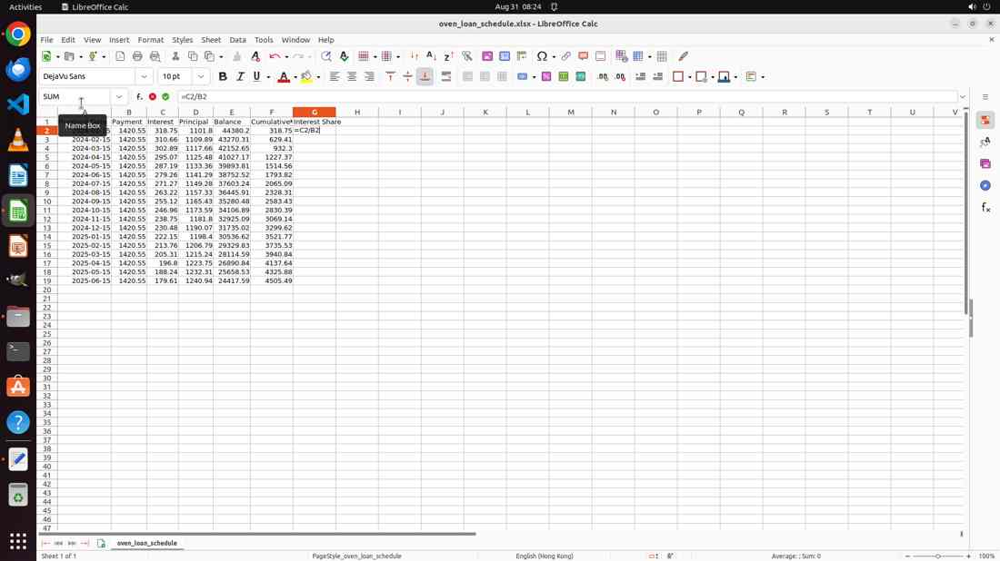
step 33 00:24:54
THINKINGG1 = "Interest Share" ✓. G2 is in edit mode with "=C2/B2" (formula bar shows =C2/B2, name box "SUM", edit mode indicated by red X / green check at 188/216). The trailing newline put it in edit but hasn't committed yet (same as before with F2). Let me press Enter/Return to commit.
ACTIONG1 shows "Interest Share" and G2 has the formula in edit mode. Let me commit it with Enter.
EXECUTED (pyautogui in VM)pyautogui.press("return")
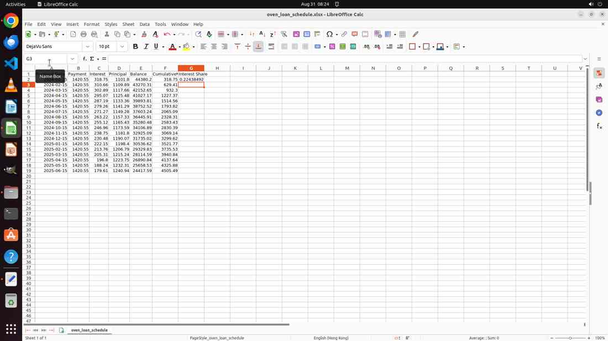
step 34 00:25:04
THINKINGG2 now shows 0.22438492 (= 318.75/1420.55 = 0.2244). Good, it's a real formula result. Now I need to fill G3:G19 with the same formula. Let me copy G2 and paste to G3:G19.
Steps:
1. Select G2 (name box G2, Return)
2. Ctrl+C
3. Select G3:G19 (name box, Return)
4. Ctrl+V
Let me do it. First click name box.
ACTIONG2 = 0.22438 (a real formula result). Now let me copy G2 down to G3:G19.
EXECUTED (pyautogui in VM)pyautogui.hotkey("ctrl", "v")
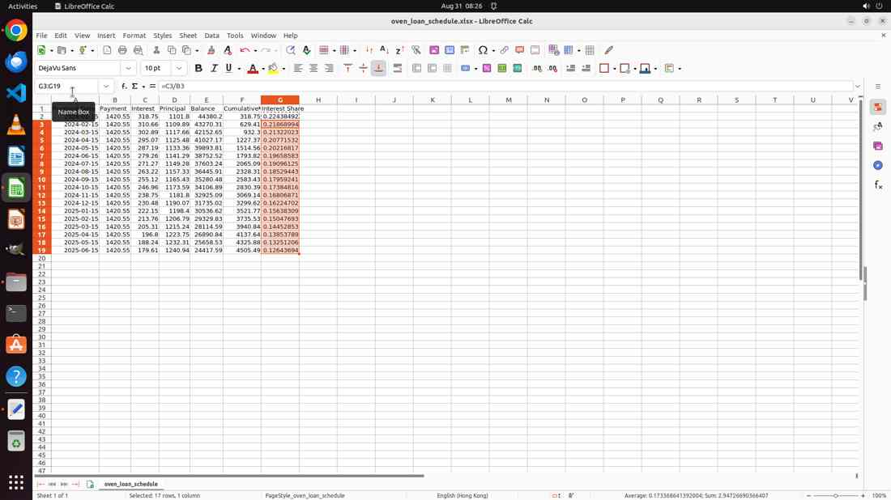
step 42 00:26:29
THINKINGThe Interest Share column G is now filled with values (0.2243..., 0.2186..., etc.). G3:G19 selected. Now I need to format G2:G19 as percentage with 1 decimal. The range G3:G19 is currently selected. I need to include G2. Let me select G2:G19.
Actually I can apply percentage format to G2:G19. Let me select G2:G19 via name box, then apply percentage format with 1 decimal.
To format as percentage with 1 decimal: I can use Format Cells dialog (Ctrl+1) and set Percentage with 1 decimal, OR use the toolbar. The toolbar has a percentage button. But that gives default decimals. Better to use Ctrl+1 (Format Cells) to set Percentage, 1 decimal place.
Let me select G2:G19 first. Click name box, type G2:G19, Return. Then Ctrl+1.
Let me do the selection.
ACTIONThe Interest Share column is filled. Now I need to format G2:G19 as a percentage with 1 decimal. Let me select G2:G19 first.
EXECUTED (pyautogui in VM)pyautogui.hotkey("ctrl", "1")
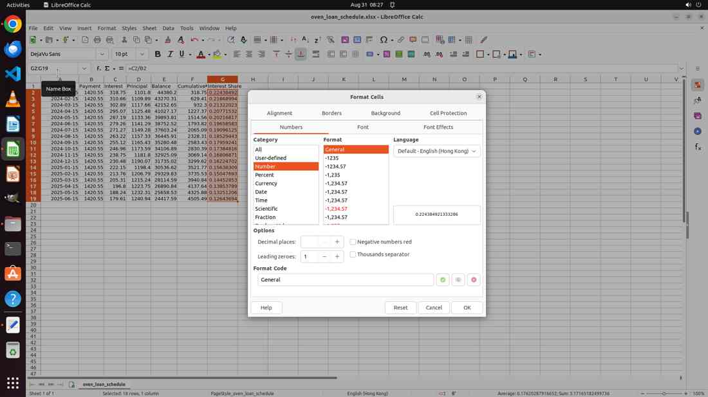
step 46 00:27:13
THINKINGThe Format Cells dialog is open on the Numbers tab. I'll set the format directly via the Format Code field to ensure exactly 1 decimal percentage. The cleanest approach: type the format code "0.0%" in the Format Code field, then OK. This guarantees percentage with 1 decimal.
Alternatively, click "Percent" category and set decimal places to 1. But the Percent category default might be "0%" (0 decimals) or "0.00%". To be safe, I'll directly set the Format Code to "0.0%".
Let me clear the Format Code field and type 0.0%. Triple-click the Format Code field to select all, then type 0.0%, then click OK.
ACTIONThe Format Cells dialog is open. I'll set the format code directly to a 1-decimal percentage. Let me clear the Format Code field and enter `0.0%`.
EXECUTED (pyautogui in VM)pyautogui.tripleClick(935, 758)
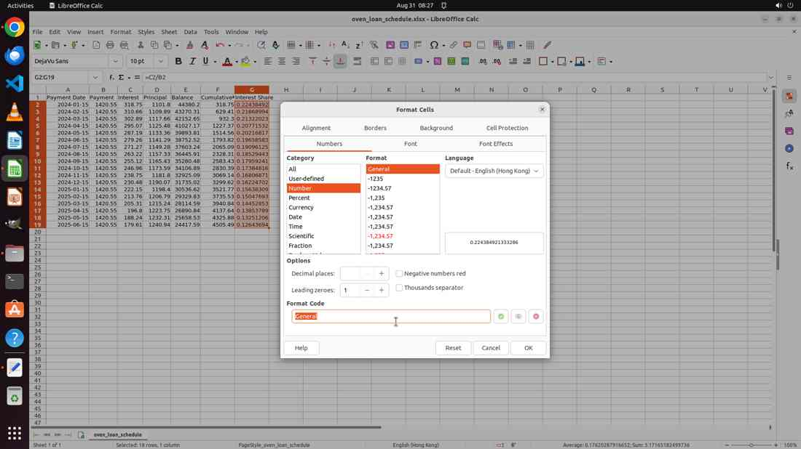
step 47 00:27:25
THINKINGThe Format Code field shows "General" selected (highlighted). Now type "0.0%" to replace it. This is a percentage with 1 decimal. Then click OK.
ACTIONThe Format Code field is selected. Let me type the percentage format code and confirm.
EXECUTED (pyautogui in VM)pyautogui.click(1262, 833)
step 49 00:27:50
THINKINGThe Interest Share column G is now formatted as percentages with 1 decimal (22.4%, 21.9%, 21.3%, ... 12.6%).
Now steps 4-6 in column H:
- H2 = "Total Interest Paid"
- H3 = sum of Interest column (C2:C19), 2 decimals
- H5 = "Fed H.15 Bank Prime Loan Rate"
- H6 = 6.75
Let me navigate to H2. Click name box, type H2, Return, type label + Enter. Then H3 = =SUM(C2:C19) format 2 decimals.
Let me handle H2 and H5 labels first (text), then H3 and H6 (numbers with formatting).
Actually let me do it row by row:
- H2: "Total Interest Paid"
- H3: =SUM(C2:C19)
- H5: "Fed H.15 Bank Prime Loan Rate"
- H6: 6.75
For H3, I'll format with 2 decimals. The default interest values have 2 decimals already, and the sum likely has 2 decimals. But to be safe, format H3 as number with 2 decimals.
Let me start. Navigate to H2.
ACTIONThe Interest Share column is now formatted as percentages with 1 decimal (22.4% down to 12.6%). Now let me add the summary in column H. First, navigate to H2 for the "Total Interest Paid" label.